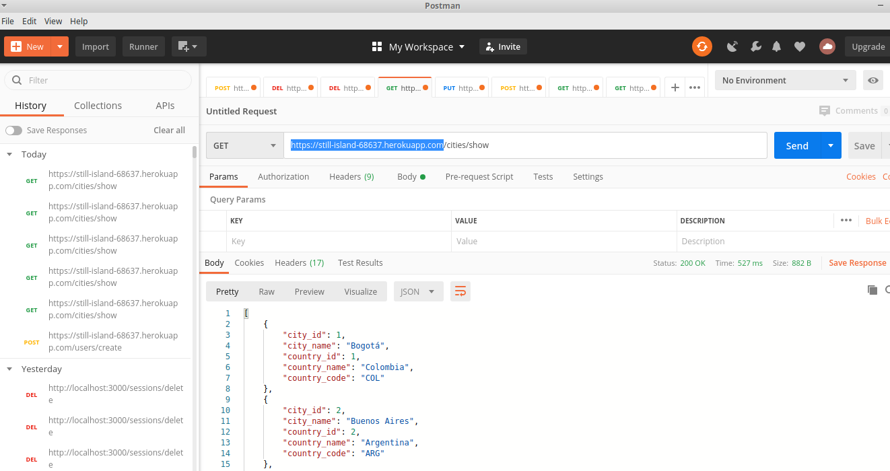
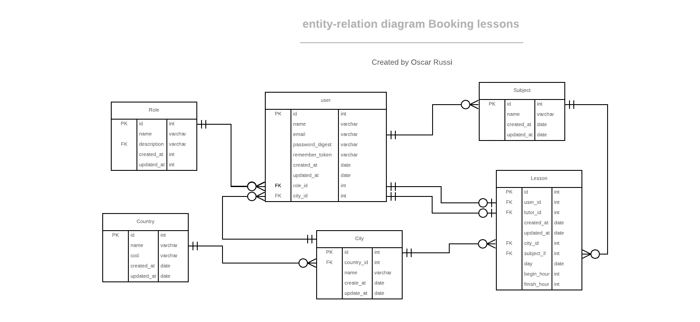

Booking lessons
Backend project. API for a booking lessons app

What it does
-
This project is an API about student booking lessons with tutors in the same city
-
Student can choose nonspecific date, a range of hours and tutors from his city
-
A lesson has a student, a tutor, a city, a date, a begin hour, a finish hour and a subject
-
Time of the lesson cannot overlap with other lessons of the student or other lesson of the tutor
-
A tutor can log to the system and modified the list of his subjects
-
Lesson subject must be a subject from the tutor's subjects
-
This project has 87 test cases, 37 for the model and 50 for the controllers
-
documentation generated with rdoc and yard (comments in the controllers are for generate the documentation).
-
deploy in heroku

API Documentation
How to run this project
-
Install ruby
-
Install ruby on rails
-
Install bundle
-
clone this project
-
Run “bundle install” inside folder
-
Run “rails db:migrate”
-
Run “rails db:seed”
-
Run “rails server” inside folder
-
Go to 127.0.0.1:3000/
-
OPTIONAL:
-
Use Postman to test the API
-
Run “rspec” for running the tests
-
RUn “rubocop” for running the linter
live demo
Project Presentation (VIDEO)
Tools
-
Ruby
-
Ruby on Rails
-
SQL
-
Heroku
and deployed to GitHub
Running tests
To run the automated tests, type “rspec” command from the terminal end press enter. You must be inside the project folder.
Planned Features
github.com/andresporras3423/booking-lessons/issues
Authors
Oscar Russi - Github: @andresporras3423 - Linkedin: Oscar Russi - Twitter: @OscarRussi1
� Contributing
This is a project for educational purposes only. We are not accepting contributions.
Attributions and Credit
Special thanks to Microverse, for this learning opportunity.
Show your support
Give a ⭐️ if you like this project!